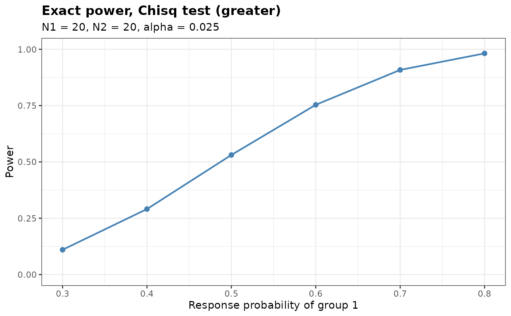
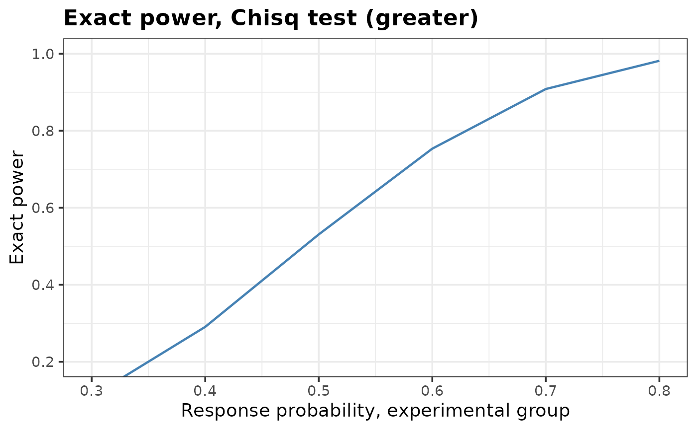

Plot Exact Power against the Response Probability of Group 1
Source:R/plot.bbssr_power.R
plot.bbssr_power.RdPlot Exact Power against the Response Probability of Group 1
Arguments
- x
An object of class
bbssr_powerreturned byBinaryPower- main
Title of the plot. The default of
NULLbuilds the title from the object and a singleNAdrops it- sub
Subtitle of the plot, following the convention of
main- xlab
Label of the horizontal axis, following the convention of
main- ylab
Label of the vertical axis, following the convention of
main- ylim
Numeric vector of length two giving the range of the vertical axis, or
NULLfor a range chosen from the data- show.points
Logical. If
TRUE, the default, a marker is drawn at every evaluated response probability. Set it toFALSEto draw the curve alone, which is easier to read on a fine grid- colours
Colour of the curve
- base_size
Base font size of the theme, in points
- ...
Further arguments, currently ignored
Details
The vertical range is imposed with coord_cartesian, so points
outside ylim are hidden rather than removed from the data.
Examples
pw <- BinaryPower(p1 = seq(0.3, 0.8, by = 0.1), p2 = rep(0.2, 6),
N1 = 20, N2 = 20, alpha = 0.025, Test = 'Chisq')
plot(pw)

# Enlarge the type, rescale the vertical axis, rename the axes and drop the markers
plot(pw, base_size = 14, ylim = c(0.2, 1), sub = NA, show.points = FALSE,
xlab = 'Response probability, experimental group', ylab = 'Exact power')
